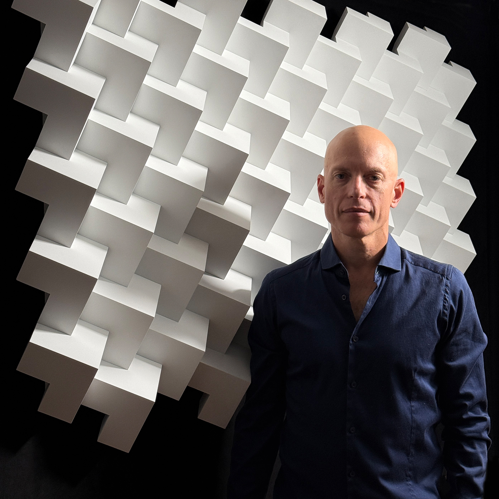
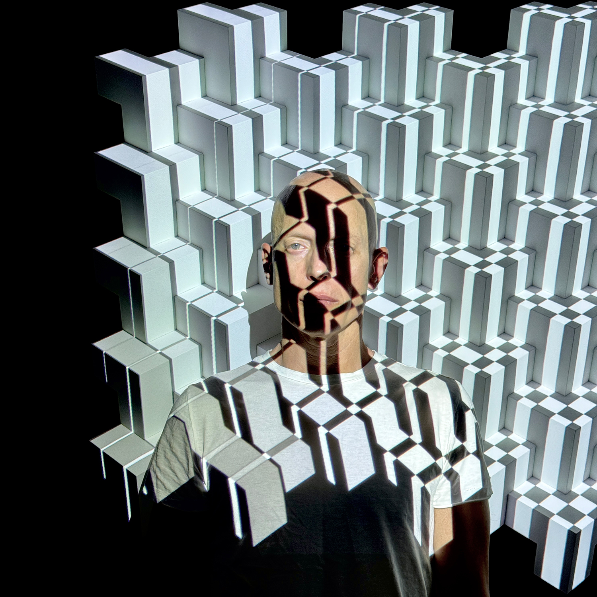
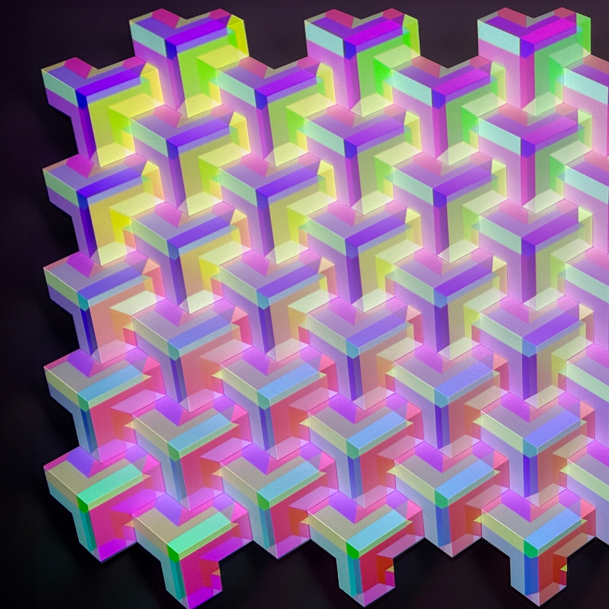
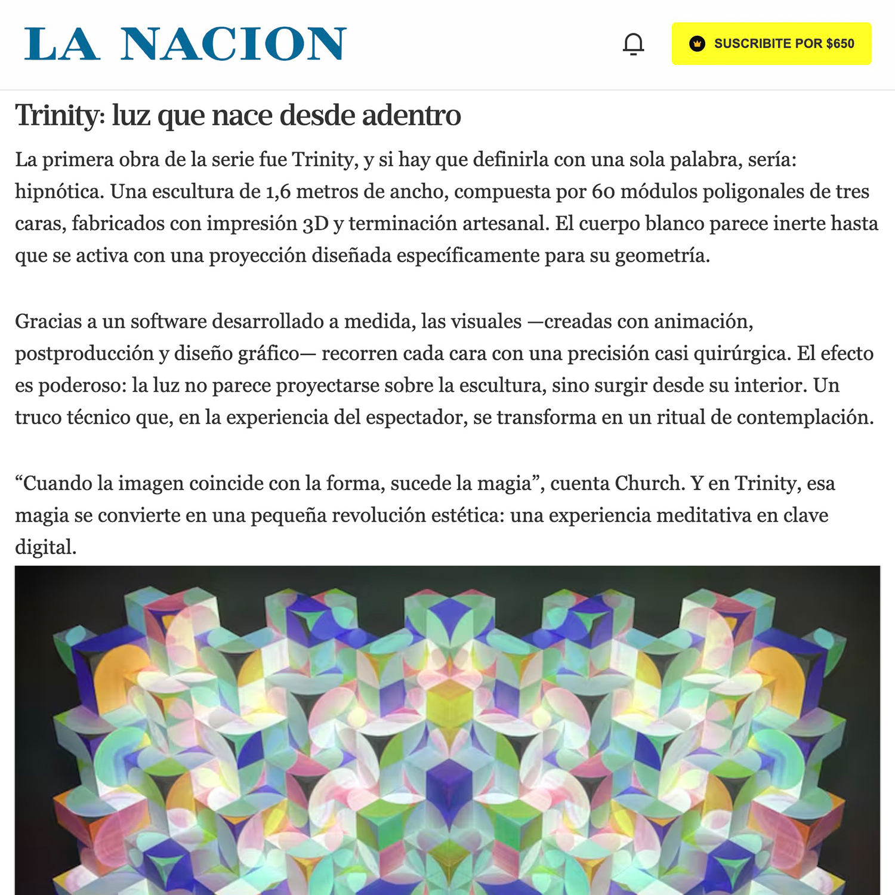

Artista emergente e inventor autodidacta
Creador integral de sus obras lumínicas, con más de 15 años de experiencia en la industria y graduado en Ingeniería Industrial.
Primer VJ digital de Argentina.
2001. Comenzó a investigar con visualizadores (AVS de Winamp y G-Force) y animaciones abstractas, desarrollando sistemas multipantalla y experimentos tempranos de proyección mapeada en los principales festivales de música electrónica antes de que se conociera el término mapping.
Cofundador de Sasami:
2004. Creó una productora tecnológica dedicada a la puesta audiovisual y proyección mapeada para marcas y eventos corporativos.
Esculturas para mapping:
2017. Comenzó a diseñar esculturas concebidas para ser intervenidas con proyección, buscando llevar la técnica a sus límites.
Desarrollo de obras lumínicas:
2021. Inició una investigación que cambió su diseño industrial, animación y programación en OpenFrameworks para lograr un mapping poligonal ultra preciso.
Presentación de la instalación lumínica Trinity:
2026. Culminación de su proceso que sintetiza la exploración entre la geometría, la luz y la percepción, integrando lo digital y lo físico con experiencias inmersivas y contemplativas.


“ Mi trabajo parte de una analogía cosmológica: la realidad entendida como un proceso de proyección.
La luz, al atravesar distintos planos, se convierte en color, información y finalmente en experiencia.
Las obras exploran ese misterio, entre lo fotográfico y lo material, donde la percepción se vuelve forma.
Trabajo cómo la luz puede devenir materia y cómo la vivencia se transforma cuando la geometría deja de ser estática. Cambio esculturas físicas, animación digital y desarrollos de software para crear instalaciones donde lo tecnológico está al servicio de lo sensorial.
La precisión no es solo obsesión: es una condición necesaria para que se produzca la ilusión de que las texturas no tienen otra alternativa que recorrer la forma, determinado por la morfología de cada instalación.
Las reglas que consigo hacer que cada pieza digital funcione, como un universo propio, con leyes internas.
Las obras no narran, proponen un estado de contemplación. Son experimentos sobre lo que creamos estable y sobre la posibilidad de producir presencia a través de lo lumínico. ”
Church aborda, con claridad, y comparte impresiones biográficas y geométricas. Desde su investigación traducida en obra, nos propone una aventura que se une, duda e interesa. Su trabajo parte de una zona donde el rigor intelectual y la tecnología no se oponen a la sensibilidad, sino que la potencian.
Su práctica se organiza como una cartografía en expansión, modelos conceptuales, imaginación y experimentación con luz y color como materia activa.

Tras un extenso período de trabajo, donde prueba y error se suman a conocimientos específicos, no hay un resultado unívoco, sino la interrelación de una arquitectura entramada en el tiempo, sostenida por la formación y una actitud disciplinar de búsqueda entre identidad, actitud lírica, artes visuales y desarrollos tecnológicos.
La obra se compone de un soporte mural de volúmenes proyectados, un proyector de alta definición y una estructura digital que articula líneas, planos y ritmo. De este mágico haz, las formas se despegan, aparecen y reaparecen sin alterar la percepción. Cuando espera reinstalar la secuencia estable, la imagen se repliega y provoca otra configuración. No hay narrativa en la representación figurativa, hay repetición.
La geometría funciona aquí, no como un ornamento ni ostensible ni histórica: es estructura y resonancia. Resulta inevitable pensar en tradiciones que ahondaron en la abstracción como dimensión interior — desde la búsqueda espiritual formulada por Kandinsky hasta la búsqueda de la pureza en Malévich — y en las experiencias cinéticas de Soto o Kosice.
Church actualiza ese legado en un contexto donde la energía creada no permanece en el objeto, sino que circula y sucede en el espacio, entre visión y espacio, observador y percepción.
El carácter etéreo y secuencial es central: cada composición es apenas un fragmento entre los múltiples infinitos posibles. Este número finito de imágenes abre posibilidad de repetición y regularidad. Los números transmiten así el orden. Nunca puede detenerse, porque siempre habrá una variable no inscripta en la línea preestablecida. ¿Cómo incide la escala en la relación física entre exactitud, espacio expositivo y proyección? Si consideramos que cada realización es idéntica en su estructura y distinta en su experiencia individual e colectiva... y así continúa...
En Trinity, la carga interior se manifiesta en la precisión de las formas geométricas, la belleza intencional del color-luz, en las sutiles tensiones que se producen con cada cambio de dirección o ritmo, donde el margen de error habita lo inesperado. Es una obra que entrelaza lo histórico con lo poético y se sitúa en un tiempo introspectivo que deja en suspenso la frontera entre obra y percepción.
Por ello, Trinity convoca "al cuerpo" y lo sitúa en ese mismo tiempo introspectivo, en suspenso entre obra y percepción.
Materia y contenido se condensan en la construcción de un universo propio, el del artista, Church, y sus múltiples inquietudes. Trinity, su obra, es una pieza sensible que se transforma en la mirada y se ofrece como un campo abierto que despliega, seduce y asume que tiene el potencial de crecer y resonar como un organismo de luz en cada espectador.
Marcela Furlani
Artista Visual
Febrero 2026
por Leila Sobol
“ Un argumento artístico que desafía los límites de lo que entendemos por ‘obra de arte’. ”
“ Aquí, lo que se explora no se cuelga en la pared: se activa. Lo que se mira no se olvida, se habita. ”
Link a la nota completa